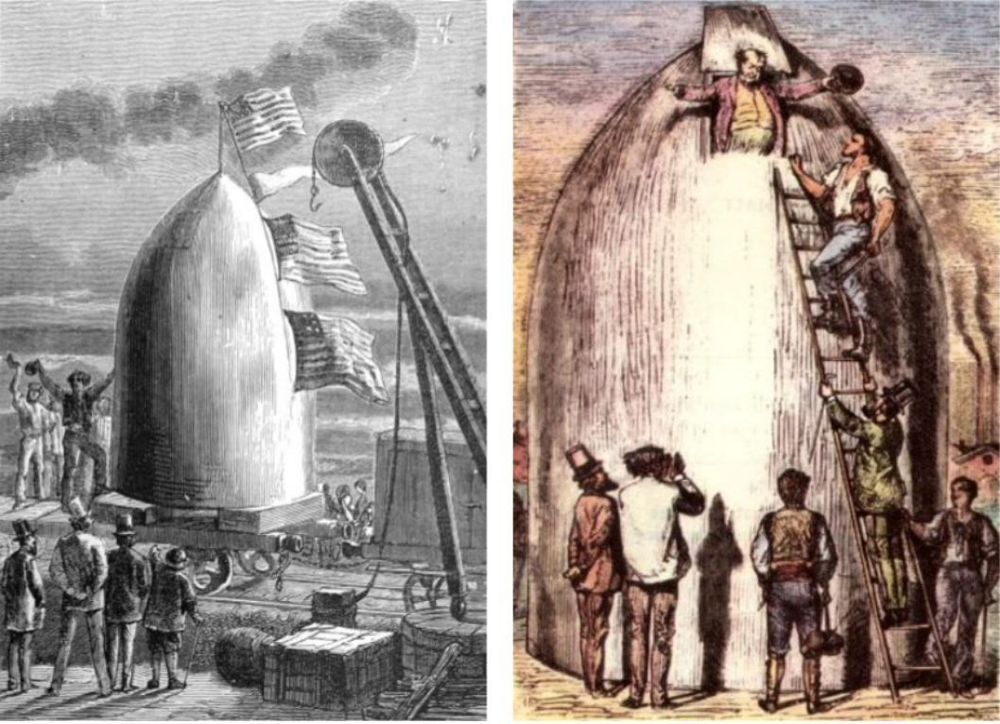
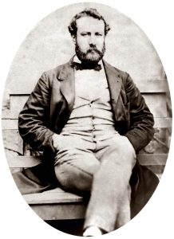
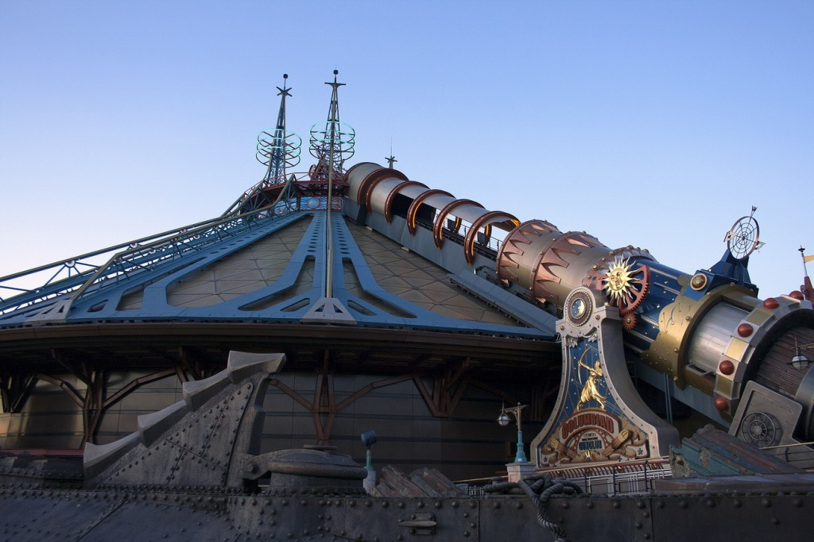

З гармати на Місяць

Верн відправив на Місяць трьох мандрівників - стільки ж входило в команду кожного з «Аполлонів». Снаряд «Колумбіада» був алюмінієвим - і саме сплави алюмінію використовувалися при створенні посадкового модуля «Аполлонів».
Одне з найбільш сміливих пророцтв Верна - космічні подорожі. Звичайно, француз не був першим автором, який відправив своїх героїв до небесних сфер. Але до нього літературні астронавти літали тільки чудесним чином. Наприклад, в середині XVII століття англійський священик Френсіс Годвін написав утопію «Людина на Місяці», герой якої відправився до супутника за допомогою фантастичних птахів. Хіба що Сірано де Бержерак літав до Місяця не тільки верхом на чорті, але і за допомогою примітивного аналога ракети. Однак про наукове обгрунтування космічного польоту письменники не замислювалися аж до XIX століття.
Першим, хто всерйоз взявся відправити людину в космос без допомоги «чортівні», став якраз Жуль Верн - він покладався, природно, на силу людського розуму. Однак в шістдесятих роках позаминулого століття про освоєння космосу люди могли тільки мріяти, і наука всерйоз цим питанням ще не займалася. Французькому літератору доводилося фантазувати виключно на свій страх і ризик. Верн вирішив, що найкращим способом відправити людину в космос стане гігантська гармата, снаряд якої послужить пасажирським модулем.
Саме зі снарядом пов'язана одна з головних проблем проекту «місячної гармати». Сам Верн прекрасно розумів, що астронавтів в момент пострілу очікують серйозні перевантаження. Це видно по тому, що герої роману «Із Землі на Місяць» намагалися убезпечити себе за допомогою м'якої обшивки стін і матраців. Зайве говорити, що все це в реальності не врятувало б людини, що зважився повторити подвиг членів «гарматного клубу».
У 1995 році в паризькому «Діснейленді» відкрився атракціон за мотивами роману «Із Землі на Місяць».
Майже через сто років після виходу «Людини на Місяці» проект космічної гармати знайшов нове життя. У 1961 році міністерства оборони США і Канади запустили спільний проект HARP. Його метою було створити гармати, що дозволяють виводити на низьку орбіту наукові та військові супутники. Передбачалося, що «супергармата» дозволить істотно скоротити витрати на запуск супутників - всього до декількох сотень доларів за кілограм корисної ваги.
До 1967 року команда на чолі з фахівцем із балістичної зброї Джеральдом Буллом створила десяток дослідних зразків космічної гармати і навчилася запускати снаряди на висоту в 180 кілометрів - це при тому, що в США космічним вважається політ за межі 100 кілометрів. Однак політичні розбіжності між США і Канадою привели до закриття проекту. Нині гармата HARP закинута і поростає іржею.
Ця невдача не поставила хрест на ідеї космічної гармати. До кінця XX століття було зроблено ще кілька спроб створити її. Але до сих пір нікому не вдалося вивести гарматний снаряд на орбіту Землі.